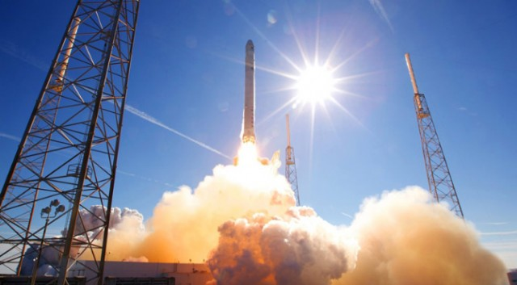

Falcon9 and Dragon
The Falcon9 rocket is a two stage re-useable, human rated orbit capable rocket desgined and manufactured by space exploration technologies (spacex), it is capable of lifting a wide variety of payloads including unmanned supply ships for the space station, communication satellites and communication satellites, it is also capable of safely landing its first stage and will soon have a manned spacecraft aswell.the first stage of the falcon 9 is powered by 9 merlin engines(hence the name falcon 9), generating a combined thrust of 6,806kn at sea level, whilst it uses all 9 at lift off by the time it comes to landing so much fuel has been burnt that its light enough that only a single engine is used, meanwhile the second stage, powered by a single merlin vacuum engine goes on to deliver up to 13,150kg to orbit, or more in an expendable configuration since it doesn't have to carry landing equipment and doesn't have to conserve fuel in the first stage.
whilst falcon 9 can theoreticaly take any payload up to the size of a bus within the 13,00kg limit it has 2 spacecraft specificaly designed for it, these are dragon and dragon v2, the first is a large, unmaned cargo ship capable of carrying 6000kg of supplies in its pressurised hull and its unpressurised trunk, designed to hold larger cargo like docking adaptors,it is also capable of returning up to 3000kg to earth.
whilst dragon was originaly designed to carry humans it has replaced in that role by dragon v2, this spacecraft is designed to be able to deliver up to 7 astronauts to the international space station at once, stay there for several months and then return to earth and land using it's engines with the accuracy of a helicopter and being re-used several times and whilst it does lose pressurised cargo space since that area is now filled with people, it still has the trunk for large unpressurised cargo.

Launch of a Falcon9 rocket.
back to top